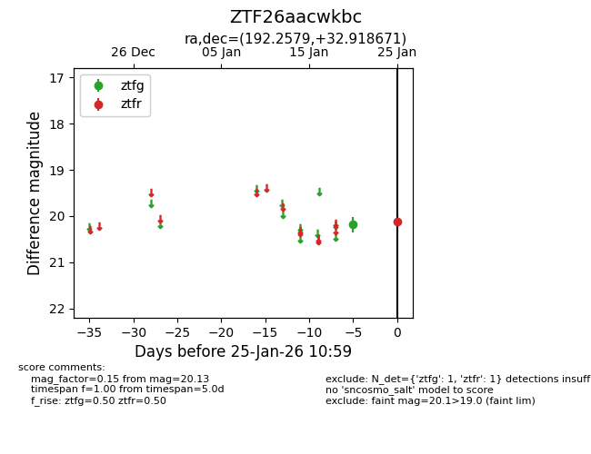
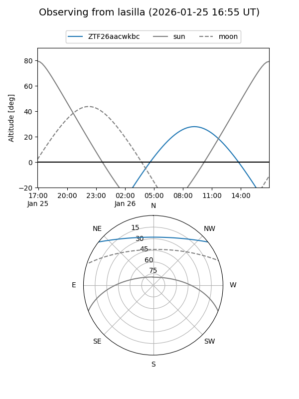
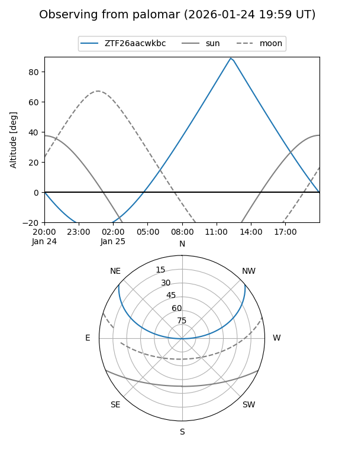

ZTF26aacwkbc
Target ZTF26aacwkbc at 2026-01-25 11:01
Aliases and brokers:
FINK: link
Lasair: link
ALeRCE: link
alt names
ZTF26aacwkbc (ztf,fink_ztf)
Coordinates:
equatorial (ra, dec) = 192.2579,+32.91867
equatorial (HMS+DMS) = 12:49:01.91,+32:55:07.22
galactic (l, b) = (127.9232,+84.18625)
Flags:
Photometry:
last ztfg=20.19, ztfr=20.13
1 ztfg, 1 ztfr detections
Lightcurve

Visibility


Additional plots